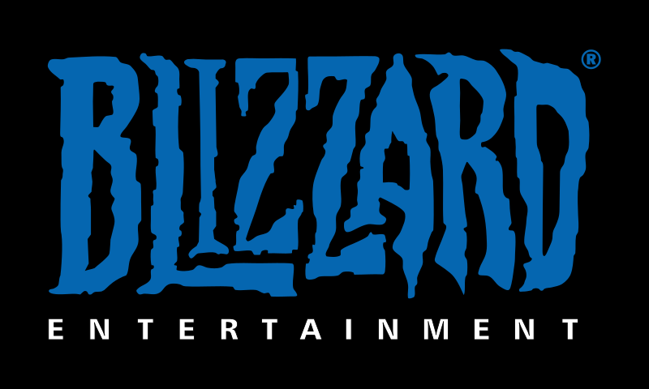

Writings
Have you guys seen what's happening with the Activision/Blizzard merger with Microsoft? Honestly its wild. While on my Discord server, I was discussing the rammifications with my friends. One made a great point, "video game companies stopped making innovation and instead started fighting throughexclusives." Is that really healthy for the future of video games?


I myself am an avid gamer with over 13 years of video game experience. My first game was Mortal Kombat trilogy when I was four years old. Ever since then I've had a passion for fighting games. Similarly I have had every iteration of Playstation besides the PS5!
We shall see in the coming years what this means for gaming. This acquisition by Microsoft has skyrocketed the gaming scetion of it to number 3 behind TenCent and Sony. Will there be more "content wars" over "console wars" in the future? We shall see.

Kosi Browne
UMSI Student
Surviving the Semester